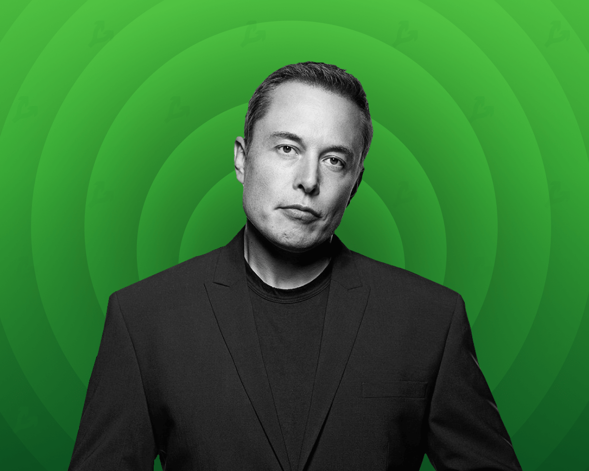
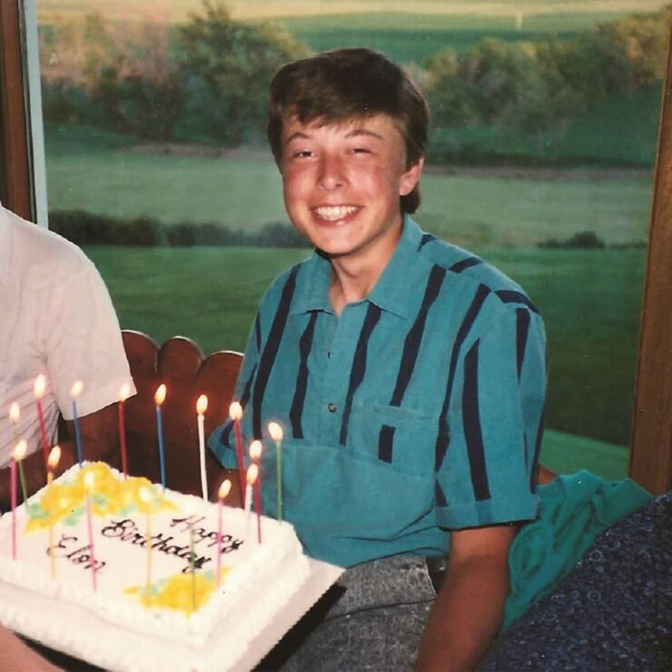
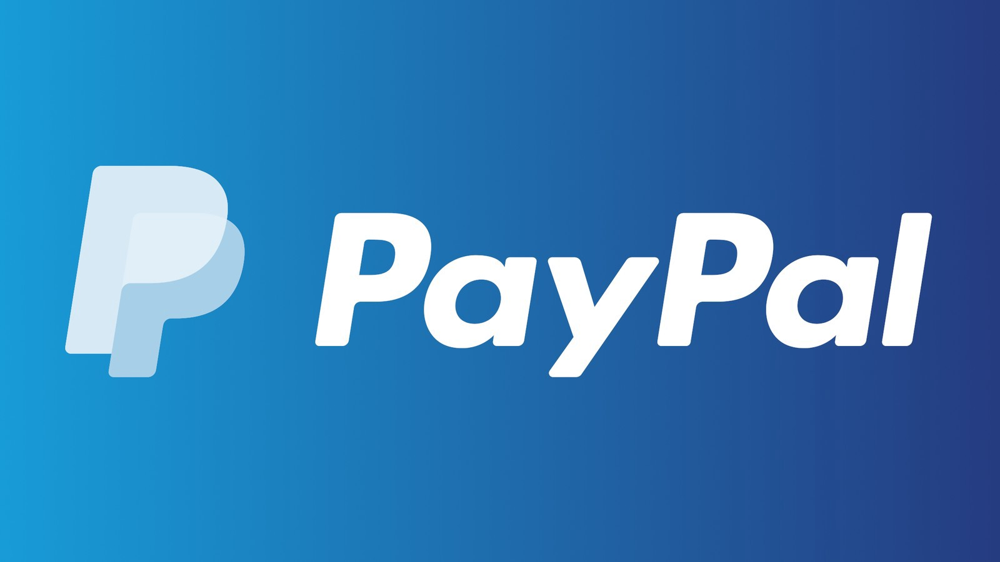
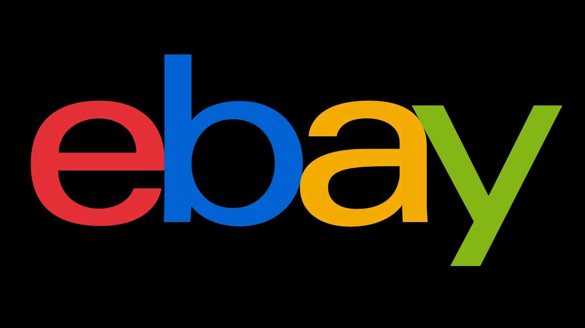
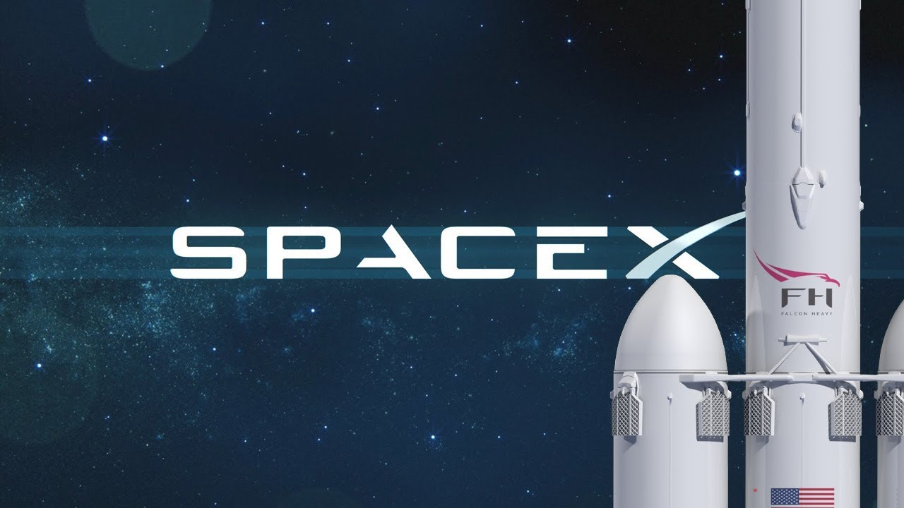
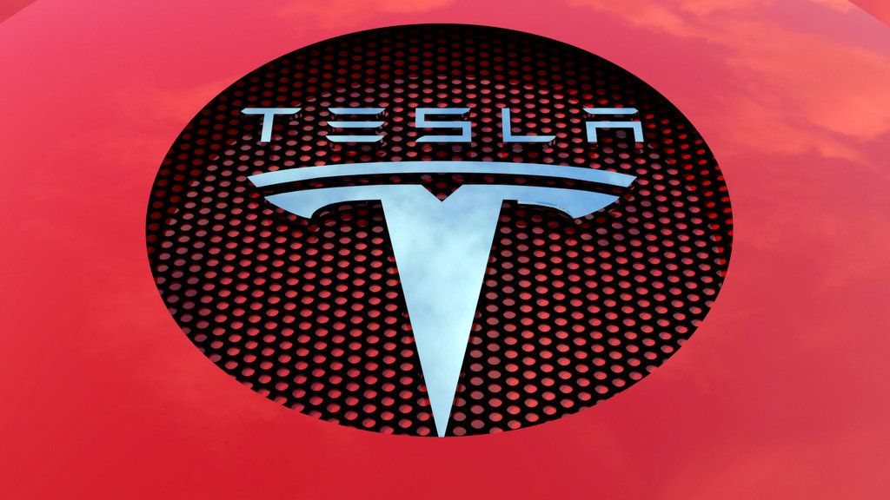
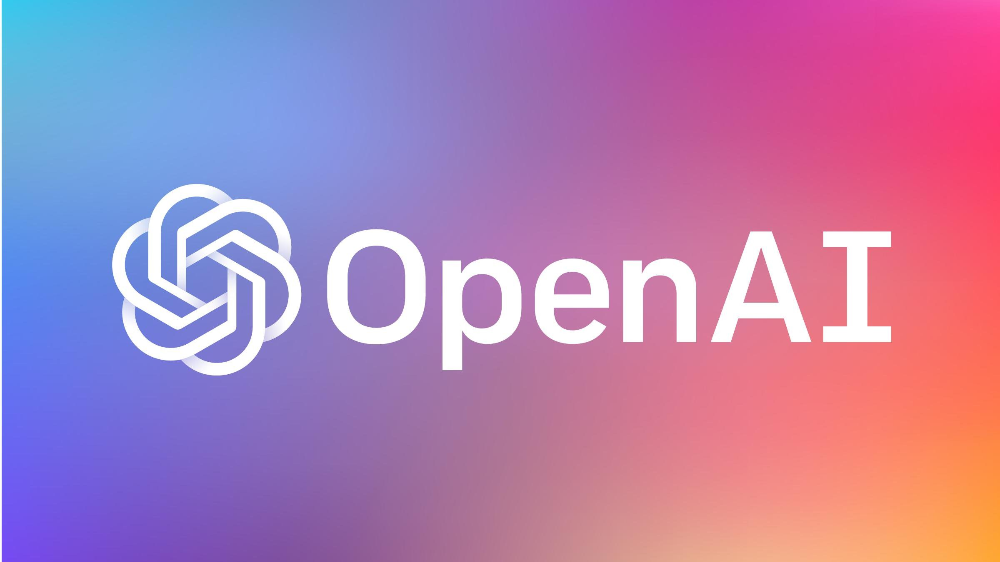
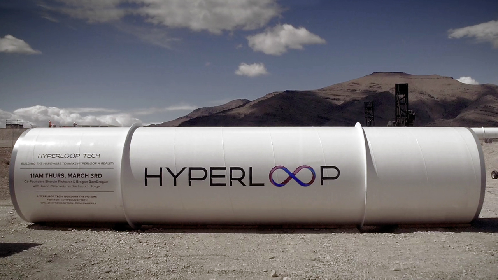

Илон Рив Маск
Кто же я такой?
- Американский предприниматель, инженер и миллиардер
- Основатель, генеральный директор и главный инженер компании SpaceX
- Инвестор, генеральный директор и архитектор продукта компании Tesla
- Основатель The Boring Company
- Соучредитель Neuralink и OpenAI; владелец Twitter
Творческий путь
Маск родился и вырос в Претории, ЮАР. Некоторое время учился в Преторийском университете, а в 17 лет переехал в Канаду.
Поступил в Университет Куинс в Кингстоне и через два года перевёлся в Пенсильванский университет, где получил степень бакалавра по экономике и физике.
В 1995 году переехал в Калифорнию, чтобы учиться в Стэнфордском университете, но вместо этого решил заняться бизнесом и вместе со своим братом Кимбалом (англ.)рус. стал соучредителем компании Zip2, занимавшейся разработкой программного обеспечения для интернета.
В 1999 году компания была приобретена Compaq за 307 миллионов долларов. В том же году Маск стал соучредителем онлайн-банка X.com, который в 2000 году конгломеративным путем консолидировался с Confinity и образовал PayPal. В 2002 году компания была куплена eBay за 1,5 миллиарда долларов.
В 2002 году Маск основал SpaceX, компанию по производству аэрокосмической техники и оказанию услуг космического транспорта, генеральным директором и главным инженером которой он является.
В 2004 году он присоединился к производителю электромобилей Tesla в качестве председателя совета директоров и архитектора проекта, а в 2008 году стал её генеральным директором.
В 2006 году он помог создать SolarCity, компанию по предоставлению услуг в области солнечной энергии, которая впоследствии была приобретена Tesla и стала Tesla Energy.
В 2015 году он стал соучредителем OpenAI, некоммерческой исследовательской компании, которая занимается продвижением искусственного интеллекта.
В 2016 году он стал соучредителем Neuralink, нейротехнологической компании, занимающейся разработкой интерфейсов мозг-компьютер, и основал The Boring Company, компанию по строительству туннелей.
Маск предложил идею Hyperloop — высокоскоростную систему транспортировки на вакуумном поезде.
В 2022 году стал владельцем Twitter за 44 миллиарда долларов.
За выдающиеся заслуги перед наукой 9 мая 2018 года удостоен членства Лондонского королевского общества. В декабре 2021 года журнал Time признал Илона Маска «Человеком года».

Достижения
- В 2008 году журнал Esquire включил Маска в список 75 наиболее влиятельных людей XXI века.
- В июне 2011 года он был награждён премией Хайнлайна за достижения в коммерциализации космоса в 500 тысяч долларов США.
- В феврале того же года журнал Forbes включил Маска в список 20 наиболее влиятельных американских CEO в возрасте до сорока лет.
- В ноябре 2013 года журнал Fortune назвал его предпринимателем года, а The Wall Street Journal назвал Маска CEO года.
- В декабре 2021 года журнал Time признал Илона Маска «Человеком года».





